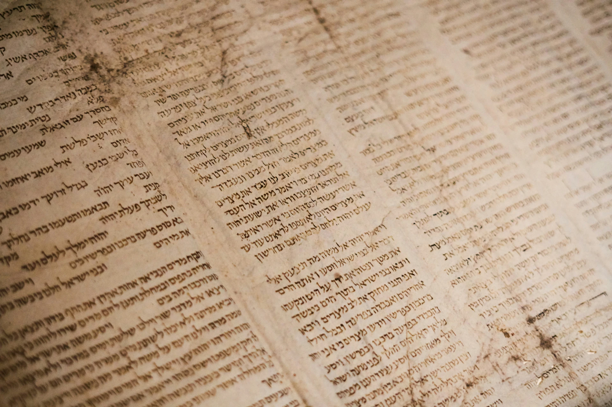

Les Justes de Saint-Maur
Ces Justes ont vécu proche de chez vous. Ainsi, des dossiers spécifiques vous en apprennent plus sur leur destin et leurs actions. Des parcours sont également disponibles ci-dessous afin de vous permettre de découvrir les lieux qu'ils ont fréquenté avant vous.